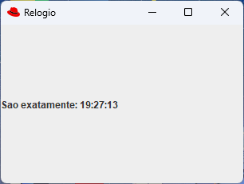

| Arquivo: Relogio.java |
| import javax.swing.*; import java.awt.*; import java.awt.event.*; import java.util.Calendar; public class Relogio extends JFrame { public JLabel horas; public Relogio() { super("Relogio"); this.setSize(300+20,200+38); this.setLocation(50, 100); Container ct = this.getContentPane(); ct.setLayout(null); horas = new JLabel("00:00:00"); horas.setBounds(0,0,200,200); horas.setText(Horas()); ct.add(horas); xTimer(); Image Icone = Toolkit.getDefaultToolkit().getImage("icon.gif"); setIconImage(Icone); // Deixa a janela visível this.setVisible(true); this.addWindowListener(new WindowAdapter() { public void windowClosing(WindowEvent e) { System.exit(0); }}); } public static void main(String[] args) { new Relogio(); } // =========================================== public String Horas(){ String Texto; Texto = ""; // Nome do arquivo: semana.txt Calendar rel = Calendar.getInstance(); int hora = rel.get(Calendar.HOUR_OF_DAY); int minuto = rel.get(Calendar.MINUTE); int segundo = rel.get(Calendar.SECOND); String temp = "" + hora; temp += ((minuto < 10) ? ":0" : ":") + minuto; temp += ((segundo < 10) ? ":0" : ":") + segundo; Texto += "Sao exatamente: " + temp; return Texto; } public void xTimer(){ Thread runner = new Thread(new Runnable() { public void run() { while(true){ try { Thread.sleep(200); } catch (Exception ex) {} horas.setText(Horas()); } }}); runner.start(); } } |